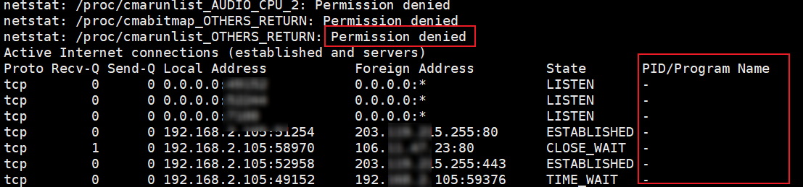
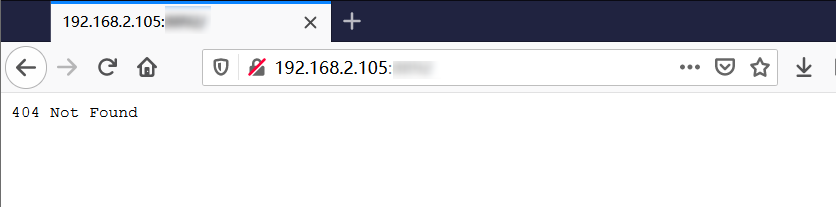
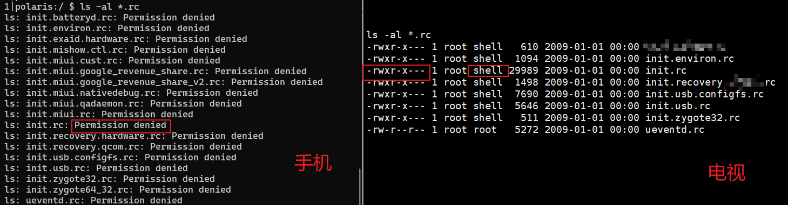
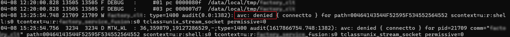
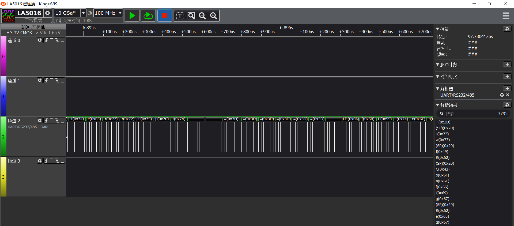
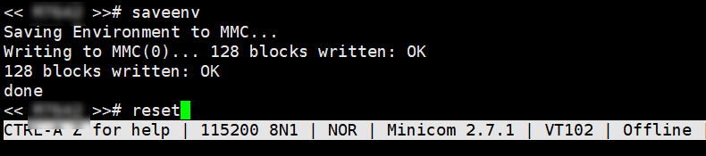
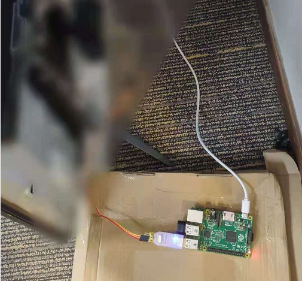

title: 智能电视漏洞挖掘初探之从文件系统分析到提权
date: 2021-04-23 12:31:17
上一篇文章讲到，通过工程模式等方法获取到了 Android ADB 的 shell，现在就来讲讲后续。
研究智能电视和分析其他 IOT 设备相似，ADB 进来之后，首先看运行的程序、 开放的端口信息。当输入命令 netstat -antp 我都愣住了，长期使用 root 权限的我，从来没见过这阵仗，PID/Program Name 中全是 -，这就很尴尬了。不知道是什么程序启用的端口。

使用浏览器访问其中的一个 WEB 端口，尝试了好些路径都是 404 Not Found。

按传统的 Web 套路，那得 Fuzz 路径。但电视上 Web 服务路径的基本都不是常规路径，那只得分析占用这个端口的应用。netstat 又看不到进程，系统中的文件又是何其的多。单个端口从海量的应用中去分析调用者，费时费力。分析查看不到的原因是，由于 adb 的权限为 shell 权限低，看不到端口对应的进程信息。电视开放了多个端口，一劳永逸的方法仍旧只有提权一条路。
遵循 Linux “一切皆文件” 的思想本质，归根到底还是要回到文件。分析文件之前需要对文件系统有个整体的把握。之前零散的玩过几个 Android 电视，发现文件系统与 Android 的大体相似，但也存在着一些差异。这些电视的文件系统有些共性的东西，正好乘着这次机会把文件系统结构梳理一下。
Android 智能电视的文件系统结构和 Android 高度相似，但也有些特有的结构。
DatabaseBackup -> /tvdatabase/DatabaseBackup:
bin : 少量可执行文件，目录下的文件大多来自 /system/bin/
Tips：系统中最重要的目录是 /system/ 和 /vendor/，普通权限也能获取其中大部分的文件。直接 adb pull 有些文件拉不下来，可以先 tar 打包到 /mnt/sdcard 然后在用 adb 下载到本地。
tar czvf /mnt/sdcard/filesystem.tar.gz /vendor/ /system/
adb pull /mnt/sdcard/filesystem.tar.gz .
智能电视的根文件系统中有一些特有的文件目录，如 odm、oem、tvconfig、tvservice、tvcustomer、tvdatabase等。
电视也是供应链的产品，也有贴牌的产品。首先把 OEM、ODM、OBM 的定义搞清楚，这几个词。
分析了多个品牌的电视固件后发现，处理器多采用 MTK 平台。电视使用的处理器是 MTK 旗下的 Mstar(晨星)半导体的。刚开始比较纳闷，这俩什么关系，也就刚写东西去查了才知道，2012年 MTK 收购了 Mstar。Mstar 提供智能电视的解决方案，属于 ODM，所以在 /odm 和 /vendor 目录下可以看到他们的文件。
理清整个文件系统的结构之后，就开始分析系统中文件了。首先看的是系统的初始化脚本，其中定义很多服务，还有很多初始化命令。去寻找有没有什么可以利用的。运气还不错，看到了一个后门服务。
init.rc 是用户空间执行的第一个程序 init 的配置文件。除了 init.rc，还有形如 init.[名称].rc。这些文件在 Android (MIUI) 普通用户是不可读的，在智能电视中往往是可读的。

init.rc 首先会使用 import 把其他的 rc 文件导入进来，拓展当前的配置。import 属于类型声明中的 Command（命令），另外三个分别是 Actions（行为）、Services（服务）和Options（选项）。下面举几个例子，熟悉一下 init.rc 的语法。
Service
Service 的语法格式：
service <name> <pathname> [ <argument> ]*
<option>
<option>
...
示例：
service console /system/bin/sh
class core
console
disabled
user shell
group shell log readproc
seclabel u:r:shell:s0
setenv HOSTNAME console
示例解析：
u:r:shell:s0 是 SELinux 的安全上下文。Action
Action 的语法格式：
on <trigger>
<command>
<command>
<command>
示例：
on property:ro.debuggable=1
# Give writes to anyone for the trace folder on debug builds.
# The folder is used to store method traces.
chmod 0773 /data/misc/trace
# Give reads to anyone for the window trace folder on debug builds.
chmod 0775 /data/misc/wmtrace
start console
示例解析：其中 trigger 是触发条件，当触发条件满足时将依次执行 command。当属性值 ro.debuggable 等于 1 时，启动上述的 console 服务。
在某次漏洞挖局中，在 init.factory.rc(漏洞点已做匿名化处理) 中看到过厂商预留的一个后门服务。
on property:factory.debug=1
start factory.debug
start adbd
service factory /system/bin/factory_app
user root
group root
seclabel u:r:su:s0
当 factory.debug = 1 时，会启动一个后门服务 factory，factory 会调用可知文件 /system/bin/factory_app 。从配置可以看到 factory_app 运行时具有 root 权限，利用这个后门执行任意命令提升权限。但编写利用脚本的漏洞时，没有注意 factory 中的 seclabel 选项，直接被 SELinux 阻断了。
在看漏洞利用程序被 SELinux 阻断之前，先来简单了解一下 SELinux。SELinux 主要作用就是最大限度地减小系统中服务进程可访问的资源（最小权限原则）。SELinux 管理过程中，进程是否可以正确地访问文件资源，取决于它们的安全上下文。
安全上下的结构为: 用户：类型：灵敏度：[类别]。
首先看SELinux的状态，Enforcing 代表开启了强模式。
$ getenforce
Enforcing
再来看当前用户的安全上下文。
$ id -Z
context=u:r:shell:s0
查看文件的安全上下文。
$ ls -Z /system/bin/factory_app
u:object_r:system_file:s0 /system/bin/factory_app
回到电视的漏洞挖掘总，在这个后门的利用中，由于权限不满足 SELinux 直接阻止了 unix_domain_socket 的连接。好不容易找到的一个提权点就这样报废了。

Tips：一般到 /etc/ 目录去看配置文件，除了看自启文件和各种配置外。需要重点专注的 SELinux 的策略，被伤过的才记忆深刻。Android 电视中的 SELinux 策略配置的挺严格的，阻断了我的好几个利用链路。
漏洞利用被阻断，心有不甘。于是想到关闭 SELinux 之后，不就可以执行任意命令了，但是要怎么关闭呢。
$ setenforce 0
setenforce: Couldn't set enforcing status to '0': Permission denied
setenforce 必定是没有权限的，系统级别无法关闭，那就在更早阶段禁用 SELinux。最后发现可以通过 Bootloader 环境变量 bootargs 来禁用 SELinux。修改 UBoot 中的参数，前提是需要进入Uboot。接入 UBoot 找个串口 ，但电视有没拆怎么知道电视有没有串口呢，直接 cat /dev/ttyS0看不了没权限。
查看 /vendor/etc/set_env 中 bootargs 的值。
$ cat /vendor/etc/set_env |grep bootargs
setenv bootargs console=ttyS0,115200 androidboot.console=ttyS0 loglevel=0 root=/dev/ram rw rootwait init=/init CORE_DUMP_PATH=/var/core_dump.%%p.gz KDebug=1 delaylogo=true androidboot.SELinux=permissive
可以看到使用了串口 ttyS0，波特率为 115200。关键是最后，androidboot.SELinux=permissive，指明了 SELinux 开启了。此时需要拆开电视找到串口，修改 bootargs 的值。
拆开电视正好看到了预留的调试接口，使用万用表找到 GND，使用逻辑分析仪找到 Tx。

使用串口工具连接电视串口与电脑。波特率设置为 115200，进入 BootLoader 修改 androidboot.SELinux 的值就能关闭 SELinux。然后使用上面的被 SELinux 拦截的程序就能获得 Root 权限。
setenv bootargs console=ttyS0,115200 androidboot.console=ttyS0 loglevel=0 root=/dev/ram rw rootwait init=/init CORE_DUMP_PATH=/var/core_dump.%%p.gz KDebug=1 delaylogo=true androidboot.SELinux=disabled enforcing=0 androidboot.dm_verity=disabled
设置好环境变量后，使用 saveenv 保存修改的值。最后使用 reset 命令重启电视。

拿到 Root 权限后就能更方便的分析应用了。
console:/ # id
uid=0(root) gid=0(root) groups=1003(graphics),1004(input),1007(log),1011(adb),1015(sdcard_rw),1028(sdcard_r),3001(net_bt_admin),3002(net_bt),3003(inet),3006(net_bw_stats)
TIPS： 电视串口直连电脑时，我们大多使用杜邦线之类的，调试线的长度比较有限。调试的时候不得不离开舒适的电脑椅，甚至要席地而坐，半天下来身心疲惫。此时可以用树莓派连接串口，我们就能回到舒适的电脑椅上继续肝了。

本文是智能电视漏洞挖掘的第三篇，这一篇从初始智能电视文件系统到权限提升，但仍旧是漏洞挖掘的起点，有了 Root 权限才能对应用和服务进行深入的研究，后面会再分享一些对应用和固件等方面的研究。有点其他事情，会断更一段时间，静候。